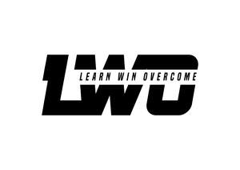

Trade Mark Journal No.2025/010 7 March 2025
UK00004156769 6 February 2025 (25,35)

- Class 25
- Clothing; Jackets [clothing]; Knitwear [clothing]; Ready-to-wear clothing; Woolen clothing; Furs [clothing]; Garments for protecting clothing; Layettes [clothing]; Linen clothing; Headbands [clothing]; Headbands for clothing; Gloves [clothing]; Gloves as clothing; Clothes; Jerseys [clothing]; Denims [clothing]; Shorts [clothing]; Cashmere clothing; Leather clothing; Silk clothing; Parts of clothing, footwear and headgear; Knitted clothing; Hoods [clothing]; Windproof clothing; Wristbands [clothing]; Belts [clothing]; Rainproof clothing; Waterproof clothing; Casual clothing; Jackets being sports clothing; Playsuits [clothing]; Bottoms [clothing]; Ready-made clothing; Clothing for leisure wear; Infant clothing; Woven clothing; Leisure clothing; Clothing for sports; Sports clothing; Athletic clothing; Drawers [clothing]; Drawers as clothing; Clothing for children; Clothing for babies; Tops [clothing]; Clothing for infants; Clothing for cycling; Water-resistant clothing; Weatherproof clothing; Clothing for skiing; Beach clothing; Men's clothing; Ski balaclavas; Beanie hats; Hats; Bucket hats; Top hats; Baseball hats; Beanies; Caps [headwear]; Knitted caps; Headwear; Skull caps; Clothing layettes; Aprons [clothing]; Maternity clothing; Kerchiefs [clothing]; Capes (clothing); Oilskins [clothing]; Gabardines [clothing]; Leather (Clothing of -); Clothing of leather; Collars [clothing]; Veils [clothing]; Corsets [clothing, foundation garments]; Embroidered clothing; Belts for clothing; Bandeaux [clothing]; Visors [clothing]; Jackets (Stuff -) [clothing]; Stuff jackets [clothing]; Latex clothing; Trunks being clothing; Ties [clothing]; Muffs [clothing]; Bodies [clothing]; Pockets for clothing; Fabric belts [clothing]; Triathlon clothing; Handwarmers [clothing]; Thermal clothing; Chaps (clothing); Cowls [clothing]; Fishing clothing; Mitts [clothing]; Braces for clothing; Dance clothing; Toques [hats]; Bobble hats; Knit jackets; Woolly hats; Fur hats; Sweaters; Sports caps and hats; Sweatshirts; Scarves; Baseball caps and hats; Caps being headwear; Scarfs; Cashmere scarves; Snoods [scarves]; Cardigans; Hoodies; Ski hats; Fascinator hats; Hooded sweatshirts; Knit shirts; Fleece jackets; Bonnets [headwear]; Fleece pullovers; Mitres [hats]; Jumpers [sweaters]; Turtleneck sweaters; Headbands; Fleece vests; Cloche hats; Miters [hats]; Fashion hats; Fake fur hats; Mittens; Knitted gloves; Ushankas [fur hats]; Capelets; Polar fleece jackets; Parkas; Snowboard mittens; Hooded pullovers; Rain hats; Visors [headwear]; Visors being headwear; Booties; Beach hats; Berets; Wearable blankets in the nature of blankets with sleeves; V-neck sweaters; T-shirts; Knitted tops; Fur jackets; Legwarmers; Turtleneck pullovers; Neck scarves [mufflers]; Mufflers [neck scarves]; Mufflers as neck scarves; Turtleneck shirts; Sheepskin jackets; Woollen socks; Sun hats; Party hats [clothing]; Neck scarfs [mufflers]; Bandanas [neckerchiefs]; Jumpers [pullovers]; Anoraks [parkas]; Sleeved jackets; Chefs' hats; Shawls and stoles; Fleece tops; Hats (Paper -) [clothing]; Paper hats [clothing]; Mock turtleneck sweaters; Snowboard jackets; Fur coats and jackets; Knit tops; Fedoras; Shawls; Paper hats for use as clothing items; Head scarves; Small hats; Caps with visors; Bandanas; Polo sweaters; Quilted jackets [clothing]; Fingerless gloves as clothing; Earmuffs; Camouflage jackets; Shoulder scarves; Pullovers; Reversible jackets; Valenki [felted boots]; Short-sleeved T-shirts; Fleece shorts; Jackets; Leather headwear; Bootees (woollen baby shoes); Men's and women's jackets, coats, trousers, vests; Knitted baby shoes; Camouflage shirts; Knitwear; Neck scarves; Hooded sweat shirts; Knitted underwear; Corduroy shirts; Ski gloves; Ski wear; Ski boots; Boots (Ski -); Ski suits; Ski jackets; Ski pants; Face mask [clothing] ; Ski trousers; Ski boot bags; After ski boots; Snowboard gloves; Ski and snowboard shoes and parts thereof; Ski suits for competition; Face masks [fashion wear] ; Skiing shoes; Sleep masks; Masks (Sleep -); Eye masks; Snowboard boots; Snowboard trousers; Snowboard shoes; Cap visors; Cap peaks; Peaks (Cap -); Nappy pants [clothing]; Men's dress socks; Men's underwear; Synthetic fur stoles; Jerkins; Braces [suspenders] for clothing / Suspenders [braces] for clothing; Men's socks; Dress pants; Dress shirts; Dress suits; Dress shoes; Fancy dress costumes; Pinafore dresses; Dresses; Bridesmaid dresses; Dress shields; Shields (Dress -); Dresses for evening wear; Wedding dresses; Cocktail dresses; Costumes for use in children's dress up play; Skirt suits; Jumper dresses; Maternity dresses; Dressing gowns; Leather dresses; Evening dresses; Shift dresses; Bridesmaids wear; Collars for dresses; Nurse dresses; Wedding gowns; Bridal gowns; Romper suits; Pleated skirts for formal kimonos (hakama); Tennis dresses; Women's ceremonial dresses; Frock coats; Gowns; Imitation leather dresses; Shoes for casual wear; Formal wear; Sashes for wear; Ladies' dresses; Christening gowns; Bathing costumes; Bodices [lingerie]; Maternity wear; Formal evening wear; Ladies wear; Leggings [trousers]; Bridal garters; Breeches for wear; Bathing costumes for women; Cheongsams (Chinese gowns); Sleeveless jackets; Casual wear; Strapless bras; Evening gowns; Evening wear; Wedding garters; Gussets for bathing suits [parts of clothing]; Pleated skirts; Blouses; Clothing for wear in wrestling games; Fitted swimming costumes with bra cups; Masquerade and halloween costumes; Masquerade costumes; Costumes (Masquerade -); Culotte skirts; Halloween costumes; Shirts for suits; Strapless brassieres; Bra straps [parts of clothing]; Casual trousers; Maternity leggings; Short overcoat for kimono (haori); Maternity pants; Sleeveless jerseys; Dinner suits; Jogging outfits; Ballet suits; Night gowns; Headgear for wear; Balaclavas; Camouflage gloves; Fingerless gloves; Denim jeans; Jeans; Denim pants; Denim jackets; Blue jeans; Chino pants; Capri pants; Corduroy pants; Corduroy trousers; Coats of denim; Denim coats; Trousers shorts; Bermuda shorts; Trousers; Blouson jackets; Culottes; Pants; Leather pants; Dungarees; Trousers of leather; Sweatshorts; Button-front aloha shirts; Sweatpants; Bib shorts; Shorts; Babies' pants [clothing]; Khakis; Trouser socks; Stretch pants; Babies' pants [underwear]; Boy shorts [underwear]; Caps; Bucket caps; Baseball caps; Peaked caps; Knot caps; Shower caps; Caps (Shower -); Garrison caps; Flat caps; Swimming caps [bathing caps]; Swim caps; Bathing caps; Sports caps; Golf caps; Cycling caps; Swimming caps; Waterpolo caps; Thermal headgear; Peaked headwear; Vest tops; Sun visors [headwear]; Socks; Sock suspenders; Toe socks; Slipper socks; Footless socks; Ankle socks; Socks and stockings; Anklets [socks]; Pop socks; Non-slip socks; Thermal socks; Anti-perspirant socks; Sweat-absorbent socks; Yoga socks; Bed socks; Tennis socks; Inner socks for footwear; Sports socks; Water socks; Socks for men; Japanese style socks (tabi); American football socks; Japanese style socks (tabi covers); Hosiery; Knee-high stockings; Shoe uppers; Hidden heel shoes; Leggings [leg warmers]; Shoe soles; Stockings (Heel pieces for -); Heel pieces for stockings; Slipper soles; Sweat pants; Jogging pants; Warm-up pants; Waterproof pants; Yoga pants; Lounge pants; Cargo pants; Weatherproof pants; Trouser straps; Camouflage pants; Track pants; Sleep pants; Wind pants; Trousers for sweating; Baby pants; Cycling pants; Pants (Am.); Snow pants; Hunting pants; Baselayer bottoms; Waterproof trousers; Padded pants for athletic use; Pajama bottoms; Pirate pants; Horse-riding pants; Nurse pants; Moisture-wicking sports pants; Tap pants; Jogging bottoms [clothing]; Rain trousers; Sweat shorts; Sports pants; Riding trousers; Tracksuit bottoms; Short trousers; Sweat bottoms; Slacks; Pantaloons; Bib tights; Golf trousers; Jogging bottoms; Swim shorts; Jacket liners; Yoga bottoms; Sliding shorts; Sweat jackets; Sweat-absorbent underwear; Infants' trousers; Briefs [underwear]; Baselayer tops; Padded shorts for athletic use; Sweat suits; Jogging suits; Gussets for tights [parts of clothing]; Underwear; Gussets for underwear [parts of clothing]; Sweat shirts; American football pants; Underwear (Anti-sweat -); Anti-sweat underwear; Lingerie; Maternity lingerie; Undergarments; Jockstraps [underwear]; Teddies [undergarments]; Maternity underwear; Underwear for women; Maillots [hosiery]; Nightwear; Swimwear; Negligees; Panties; Corsets [underclothing]; Shapewear; Sweat-absorbent underclothing [underwear]; Underclothes; Sleepwear; Bikinis; Maternity sleepwear; Stockings; Slips [undergarments]; Gussets for stockings [parts of clothing]; G-strings; Body stockings; Underclothing; Disposable underwear; Corsets [foundation clothing]; Corsets being foundation clothing; Nightgowns; Camisoles; Women's underwear; Bra straps; Brassieres; Underclothing for women; Bralettes; Straps for bras; Trunks [underwear]; Nipple pasties being underclothing; Bustiers; Swimsuits; Beachwear; Peignoirs; Functional underwear; Nighties; Ladies' underwear; Plush clothing; Nursing bras; Loungewear; Thermal underwear; Thong sandals; Boas [clothing]; Babies' undergarments; Stockings (Sweat-absorbent -); Sweat-absorbent stockings; Stockings [sweat-absorbent]; Knickers; Girdles [corsets]; Slips [underclothing]; Underclothing (Anti-sweat -); Anti-sweat underclothing; Chemises; Corsets; Sports bras; Head wear; Head sweatbands; Neck tube scarves; Head bands; Shoulder wraps [clothing]; Shoulder wraps for clothing; Crew neck sweaters; Shoulder wraps; Neck warmers; Neck gaiters; Ear warmers being clothes; Arm warmers [clothing]; Shoulder straps for clothing; Shawls and headscarves; Polo neck jumpers; Ear muffs [clothing]; Neck tubes; Basketball shoes; Basketball sneakers; Volleyball jerseys; Football shoes; Football jerseys; Football shirts; Volleyball shoes; Wrist bands; Maternity bands; Soccer shirts; Soccer shoes; American football shirts; Sweat bands for the head; Tennis sweatbands; Studs for football shoes; American football shorts; Baseball shoes; Hockey shoes; Sweat bands; Football boots; Tennis shirts; Baseball uniforms; Athletics shoes; Sports jerseys; Rugby jerseys; Shoes for foot volleyball; Foot volleyball shoes; Soccer boots; American football bibs; Rugby shoes; Shirts; Long-sleeved shirts; Short-sleeved shirts; Short-sleeve shirts; Tee-shirts; Mock turtleneck shirts; Aloha shirts; Open-necked shirts; Yoga shirts; Polo shirts; Casual shirts; Collared shirts; Maternity shirts; Ramie shirts; Shirt yokes; Yokes (Shirt -); Night shirts; Golf shirts; Pique shirts; Woven shirts; Rugby shirts; Shirt fronts; Shirts and slips; Sports shirts; Sport shirts; Fishing shirts; Under shirts; Moisture-wicking sports shirts; Hunting shirts; Sports shirts with short sleeves; Bibs, sleeved, not of paper; Sleeveless pullovers; Bib overalls for hunting; Maternity shorts; Button down shirts; Padded shirts for athletic use; Tank-tops; Golf shorts; Gym shorts; Polo knit tops; Tracksuit tops; Turtleneck tops; Printed t-shirts; Overshirts; Long sleeve pullovers; Suede jackets; Hooded tops; Turtlenecks; Quilted vests; Sleep shirts; Sweatsuits; Undershirts; Pyjamas [from tricot only]; Hooded bathrobes; Casual jackets; Jumper suits; Jumpers; Overalls; One-piece playsuits; Shortalls; Japanese style sandals of leather; Baby doll pyjamas; Jumpsuits; Pyjamas; Breeches; Toe straps for Japanese style sandals [zori]; Toe straps for zori [Japanese style sandals]; Suspenders; Waistcoats [vests]; Work overalls; Toe straps for Japanese style wooden clogs; Maternity smocks; Working overalls; Suspender belts; Waistcoats; Smocks; Windproof jackets; Leather jackets; Rainproof jackets; Bomber jackets; Waterproof jackets; Motorcycle jackets; Wind-resistant jackets; Weatherproof jackets; Shell jackets; Padded jackets; Rain jackets; Riding jackets; Warm-up jackets; Dinner jackets; Wind jackets; Heavy jackets; Hunting jackets; Bed jackets; Smoking jackets; Light-reflecting jackets; Safari jackets; Down jackets; Track jackets; Donkey jackets; Fishing jackets; Sports jackets; Korean outer jackets worn over basic garment [Magoja]; Stuff jackets; Long jackets; Wind resistant jackets; Fishermen's jackets; Outerwear; Duffle coats; Wind-resistant vests; Camouflage vests; Golf clothing, other than gloves; Leather suits; Suits of leather; Leather waistcoats; Duffel coats; Leather coats; Leather belts [clothing]; Motorcycle gloves; Waterproof boots; Leather garments; Sundresses; Espadrilles; Rompers; Monokinis; Men's sandals; Tankinis; Chemise tops; Bodysuits; Sandals; Tights; Kaftans; Baby sandals; Halter tops; Gymwear; Sleepsuits; Skorts; Baby bodysuits; Woollen tights; Sandals and beach shoes; One-piece suits; Lace boots; Footless tights; Japanese style sandals (zori).
- Class 35
- Retail services connected with the sale of clothing and clothing accessories.
Jaden darko coby